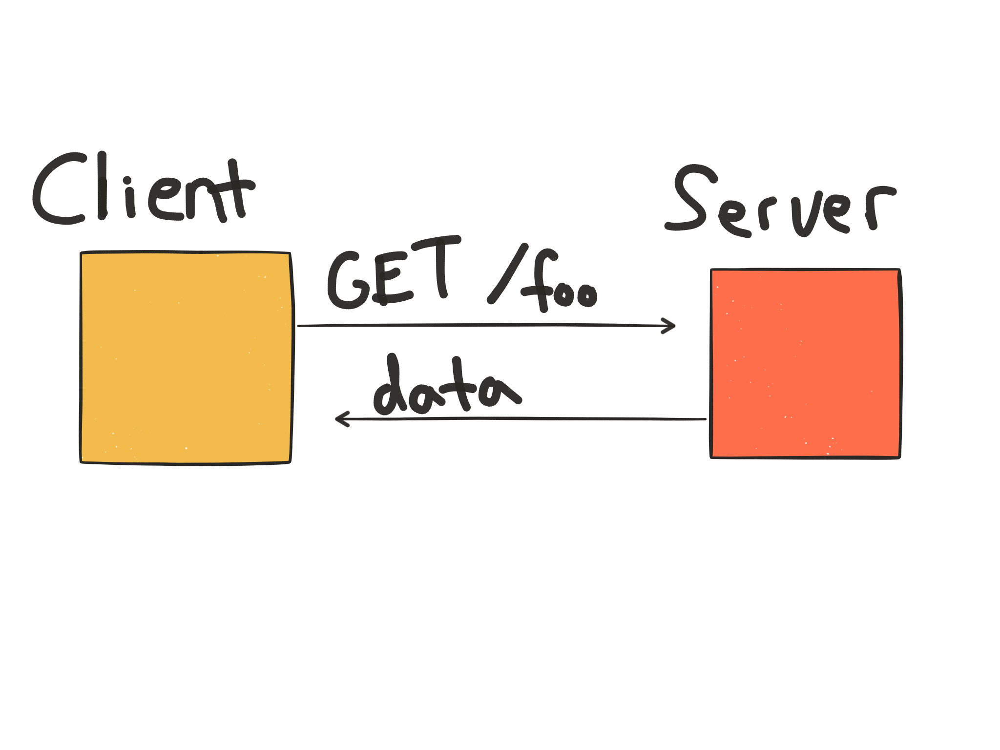

AJAX / JSON
JS202
Girl Develop It
Welcome!
Girl Develop It is here to provide affordable and accessible programs to learn software through mentorship and hands-on instruction.
- Some "rules"
- We are here for you!
- Every question is important
- Help each other
- Have fun
About Me
- Software Engineer at KualiCo
- @jergason on Twitter
- Podcast at JavaScript Jabber
- Words at jamison.dance
A Disclaimer
Web 1.0
Static Content
- display a webpage
- wait for user interaction
- query the server for data
- reload the webpage
The user has "down time" - a period of time where they can't interact with the webpage at all.
Web 1.0


Web 1.5
Enhanced Content
Sprinkles of interaction

Web 1.5
Enhanced Content

Web 2.0
Dynamic Content!
Our content isn't static anymore: it's real, live data. We get it from a database (somewhere, more on that later) and use JavaScript and jQuery to display it.

Web 2.0

JSON
JavaScript Object Notation
JSON: What is it?
- Hierarchical key/value pairs.
- Keys are inside "double quotes"
- Value can be string, number, boolean, array, or object
- Resembles objects/hash tables/structs of programming languages
- Looks like JavaScript, but other languages can produce and consume it too
- Validate at jsonlint.com
- Spec at json.org
JSON: An example
{
"firstName": "Jane",
"lastName": "Smith",
"address": {
"streetAddress": "425 2nd Street",
"city": "San Francisco",
"state": "CA",
"postalCode": 94107
},
"phoneNumbers":
[
"212 732-1234",
"646 123-4567"
]
}
Let's write some JSON
Go to jsonlint.com and create a JSON object that represents a chat message. It should have
- A user name
- A room name
- A message
- A creation date
A Solution
{
"username": "Yolo Swaggins",
"room": "fellowship",
"date": "March 20th, 2014",
"message": "just delivered the one bling to mt doom #yolo"
}
Developer Console
A built-in JavaScript REPL!
- In Mac Chrome, ⌘-Option-J
- In Mac Firefox, ⌘-Option-K (lol consistency)
- In Windows Chrome, Ctrl-Shift-J
- In Windows Firefox, Ctrl-Shift-K
Developer Console
console.log('hello JS202!')
JS + JSON + DOM
var myMessage = {
"username": "Yolo Swaggins",
"room": "fellowship",
"date": "March 20th, 2014",
"message": "just delivered the one bling to mt doom #yolo"
}
var p = document.createElement('p')
p.innerHTML = myMessage.username + ': ' + myMessage.message
p.innerHTML += ' |' + myMessage.date
document.body.appendChild(p)
jQuery + JSON + DOM
var myMessage = {
"username": "Yolo Swaggins",
"room": "fellowship",
"date": "March 20th, 2014",
"message": "just delivered the one bling to mt doom #yolo"
}
var $p = $('<p>')
$p.html(myMessage.username + ': ' + myMessage.message)
$p.append(' |' + myMessage.date)
$('body').append($p)
Click Handlers Review
$('.my-button').click(someCallback)
When this element is clicked, call our callback!
Develop It! Exercise 1
See the exercise description for details.
Did you end up with something like this?
function insert(message, selector) {
var $p = $('<p>')
$p.html(message.username + ': ' + message.message)
$p.append(' |' + message.date)
$(selector).append($p)
}
function handleClick() {
var username = $('#username').val()
var message = $('#message').val()
var data = {
username: username,
message: message,
date: Date.now(),
room: 'foobar'
}
insert(data, '#messages')
}
$(function() {
$('#send-message').click(handleClick)
})Why do this?
Now we know what to do with the data once we have it.
AJAX
Asynchronous JavaScript and XML
Asynchronous JavaScript and XML JSON
Asynchronous
Asynchronous technologies make the web awesome.
"In programming, asynchronous events are those occurring independently of the main program flow. Asynchronous actions are actions executed in a non-blocking scheme, allowing the main program flow to continue processing."
But what does this really mean?
Coffeeshop
You order a coffee, and wait for them to call your name.
They start making it, but they keep working while your coffee is being made.
They are asynchronous.
Browser
You click on a button and wait for data to come back.
The browser fetches your data, but still lets you scroll, move the mouse, click on other stuff.
It is asynchronous.
AJAX
Requesting data asynchronously from the browser and doing stuff with it.
AJAX
Requesting data asynchronously from the browser and doing stuff with it.
- Wayne Gretzky
- Michael Scott
XMLHttpRequest
var req = new XMLHttpRequest()
req.onload = function() {
console.log('wooo, we finished', req.status)
console.log('our data is', JSON.parse(req.response))
}
req.open('GET',
'https://shielded-fjord-9233.herokuapp.com/rooms', true)
req.send()
HTTP
What is that 'GET'?
req.open('GET', 'http://google.com', true)
GET is part of HTTP. It means "get me the data at this URL".
GET requests:
- Can be cached for faster lookup later
- Remain in your browser history
- Can be bookmarked
- Have length restrictions
Debugging

- Click the Network tab in Chrome Dev Tools or Firebug, select "XHR" filter to see all XMLHttpRequests made.
- See what the request responded with by clicking its "Response" tab.
Develop It! Exercise 2
See the exercise page for details.
Error Handling
HTTP uses status codes to tell us what happend to the request.
req.onload = function() {
// check if request succeeded
if (req.status == 200) {
renderRooms(JSON.parse(req.response))
} else {
console.error('req failed', req.status, req.response)
}
}
WELP
BUT!
We don't usually write all of that code.
(It is still very important to know)
WELP
jQuery ♥ AJAX
The jQuery $.getJSON function is waaaaaaaaaaaay easier.
$.getJSON('https://shielded-fjord-9233.herokuapp.com/rooms',
function(data, status) {
console.log('data is', data, 'status is', status)
})
Realtime detour
What if we want to get updates as soon as they happen? setInterval!
setInterval(callback, interval)
Realtime detour
setInterval(getNewestDataFromServer, 5000)
Upside: super duper simple on client and server
Downside: very wasteful. ¯\_(ツ)_/¯
Develop It! Exercise 3
See the exercise description for details.
Sending data to the server with POST
req.open('POST', 'http://google.com', true)
POST is another HTTP verb. It means "save or update this data".
POST requests:
- Have a body that contains the data for the server to process
- Can't be bookmarked
- Are used by form submission
- Are neato!
XMLHttpRequest POST
var req = new XMLHttpRequest()
req.onload = function() {
console.log('wooo, we finished', req.status)
console.log('our data is', JSON.parse(req.response))
}
req.open('POST',
'https://shielded-fjord-9233.herokuapp.com/messages/jane-austen', true)
req.setRequestHeader('content-type', 'application/json')
var message = {
username: 'Jane Austen',
message: 'Silly things do cease to be silly if they are done by sensible people in an impudent way.'
}
req.send(JSON.stringify(message))
jQuery ♥ AJAX
The jQuery $.ajax function is waaaaaaaaaaaay easier.
var message = {
username: 'jamison',
message: 'Hello GDI SLC!'
}
$.ajax('https://shielded-fjord-9233.herokuapp.com/messages/gdislc', {
method: 'POST',
contentType: 'application/json',
data: JSON.stringify(message),
success: function(data, status, jqxhr) {
console.log('data is', data, 'status is', jxxhr.status)
},
})
Develop It! Exercise 4
See the exercise file for details.
Use the materials/json_starter.html file from the class exercises.
Update your previous exercise to use $.ajax to POST your message to the server when the user clicks the button. You should still insert the message into the DOM as well.
Make sure to handle errors!
Making Chat Real
Now for the fun part. We combine polling for new messages with POSTing messages to the server.
Develop It! Exercise 5
See the exercise page for details.
Common Gotchas
- Multiple AJAX requests don't return in order
- Not handling errors
- Hard to transfer files
- Browsers can over-cache/under-cache requests
- Cross-browser issues up the wazoo!
AJAX Mistakes
AJAX lets you build new kinds of experiences, but it also creates new problems. As you learn more, here are a list of things to avoid:
- Not having linkable state
- Not letting users know that something is loading
- Breaking the back button
- More here.
Homework
- We hard-coded everything to one room. Allow the user to switch rooms!
- Instead of having a text field for username, create a signing form that saves the username when the page is first loaded. Reuse that name instead of pulling it from a text field every time.
- Create a "firehose" view of messages that lists message from every room as they come in.
Thank You
Questions for me? Just want to chat to follow up? Here are the best ways to contact me.
- @jergason on Twitter
- The GDI-SLC Slack team (ask Stacie for an invite)
- Email me at hi@jamison.dance
- Comment on the Meetup Page
Please fill out the after-class survey at https://docs.google.com/forms/d/1APJvtkpIOaqN7sVl8WL668DiQhWDD9te3n_0RwwLxxU/viewform to help us improve the course.